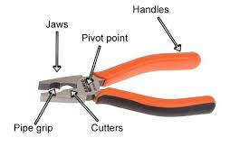
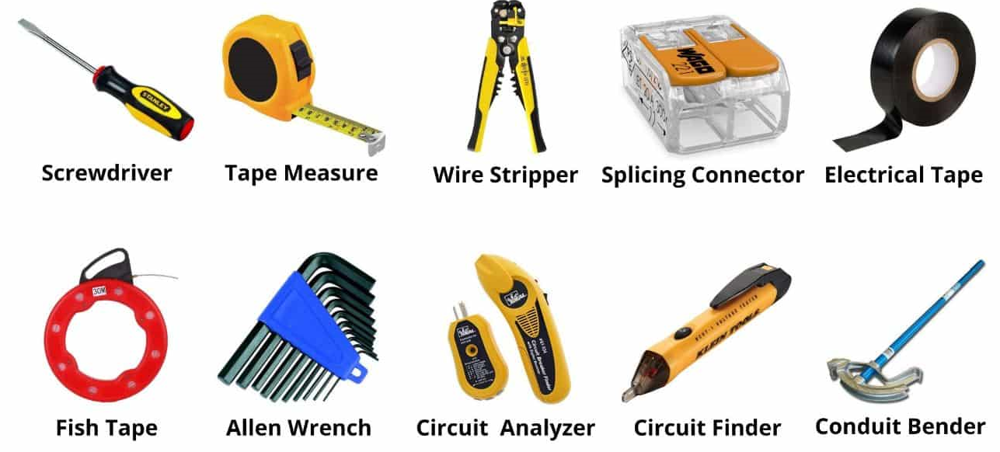
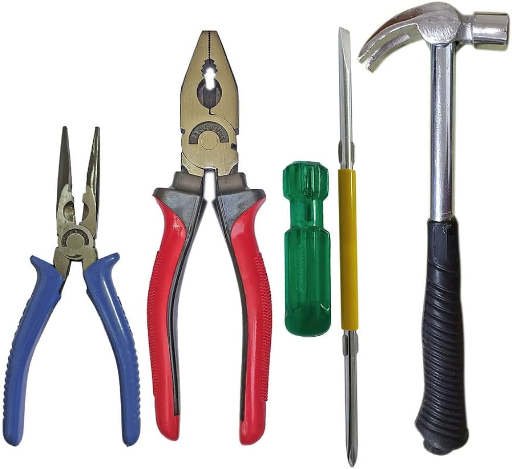

TOOLS NEEDED
Discover essential tools required for house wiring
- Voltage Tester or Multimeter: Used to detect the presence of electrical voltage in wires and circuits, ensuring safety during installation and troubleshooting.
- Wire Strippers: Essential for cleanly removing the insulation from wires to expose the metal conductor for connections.
- Fish Tape or Cable Puller: A tool used to pull wires through walls, conduits, or other tight spaces during installation.
- Cable Ripper or Utility Knife: Helps to strip the outer sheathing of cables without damaging the wires inside.

- Stud Finder: Used to locate studs and other hidden structures behind walls before drilling or cutting, ensuring safe installation of electrical boxes and conduits.
- Conduit Bender: For bending metal conduit to required angles when routing wires through walls and ceilings.
- Circuit Tester: Enables testing of electrical circuits to ensure they are properly wired and functioning correctly before connecting appliances or devices.
- Electrical Tape: Used for insulating electrical connections, securing wire bundles, and marking wires with color coding for identification.
- Wire Nuts or Terminal Blocks: Essential for securely connecting wires together and to terminals in electrical boxes.

- PVC Pipe Cutter or Hacksaw: Used for cutting PVC conduit or pipes to the required length during installation.
- Measuring Tape and Level: Ensures accurate measurements and alignment of electrical boxes, conduits, and fixtures for proper installation.
- Drill and Drill Bits: Needed for drilling holes in walls, studs, or other materials to accommodate wiring and mounting electrical boxes.
- Adjustable Wrench: Used for tightening conduit fittings, connectors, and other hardware during installation.
- Safety Gear: Includes insulated gloves, safety glasses, and possibly a hard hat to protect against electrical shocks and other hazards.
- Tool Bag or Toolbox: Keeps all tools organized and easily accessible during the wiring process, ensuring efficiency and reducing downtime.
